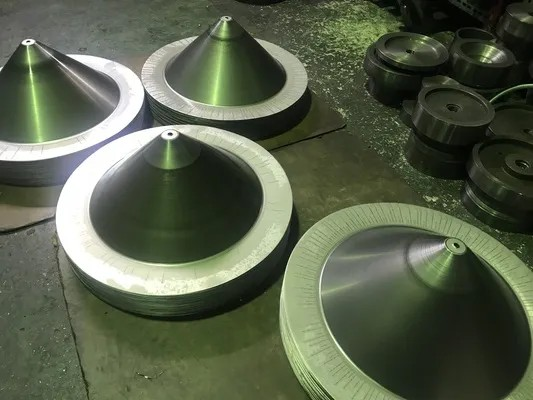
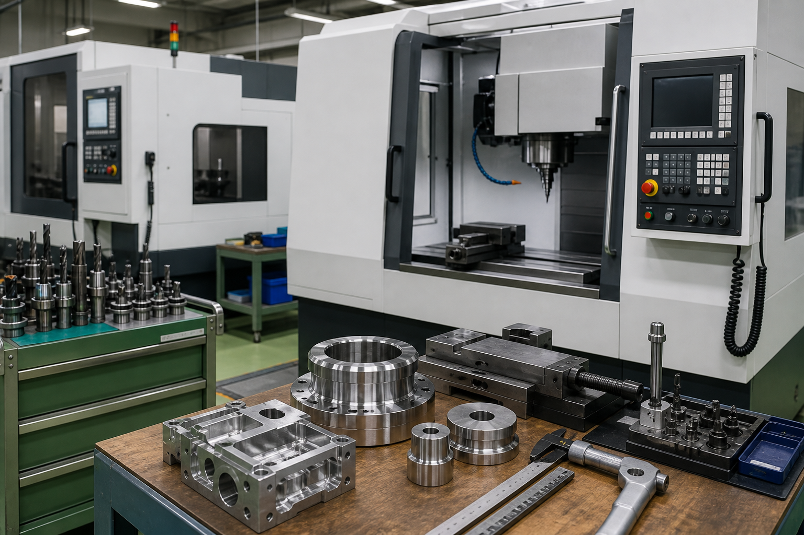
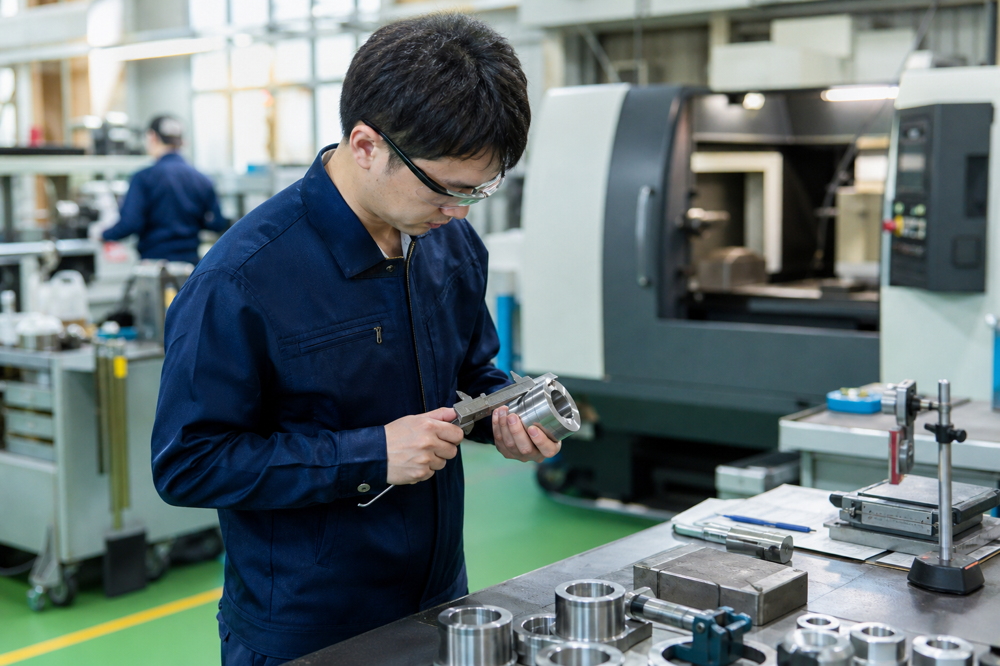

ヘラ絞りは担い手の少ない技術。機械の段取りから加工まで、一生モノのスキルが身につきます。
01
未経験からプロへ
丁寧に教えます。資格取得は費用面で支援
02
ノルマなしの日勤
8:00〜17:00。落ち着いた環境で作業に集中
03
賞与 計4.00ヶ月分*
年2回（*前年度実績）。昇給制度あり
WORK
派手ではない。けれど、技術が残る仕事。
工場で照明器具や配電盤の部品を作るマシンの準備や設定、実際の加工までを担当します。 使用設備はスピニングマシン（ヘラ絞り）、45t〜110tのプレス機、汎用旋盤、スポット溶接機。 ティーチングによる自動加工プロセスの構築・改善にも関わります。ノルマはありません。
ヘラ絞り（スピニング加工）
丸切りした金属板を回転させ、ローラーやヘラで金型に押し当てて成形する加工。竹美金属の主力技術です。
プレス絞り加工
金属板を金型で挟んで圧力をかけ、板状から円筒・円錐などの形に変形させる加工です。
プレス加工
金型で加工物を挟み、切る・抜く・曲げるなどを行います。45t〜110tのプレス機を使用します。
その他の加工
スポット溶接、ボール盤、ねじ切り、リベット打ち、汎用旋盤など、板金一切に対応しています。
勤務時間は8:00〜17:00。残業は希望制（月平均20時間・全額支給）で、稼ぎ方を選べます。
創業約50年。賞与年2回 計4.00ヶ月分（前年度実績）、退職金制度ありの町工場です。



VOICE
先輩社員コメント
未経験から仕事を覚える流れや、ものづくりの面白さが伝わるよう、現場スタッフの声として掲載しています。
最初は専門知識がなくても、機械の準備を覚えるところから始められました。
最初は覚えることがありますが、先輩に確認しながら少しずつできる作業が増えていきました。 自分が加工した部品が照明器具の一部になった時は、ものづくりの面白さを感じます。
派手な仕事ではありませんが、正確に仕上がった時の達成感があります。
同じ作業に見えても、材料や条件によって気をつける点が変わります。 段取りよく進められた時や、きれいに絞れた時に、自分の成長を実感できます。
日勤なので、生活リズムを作りながら仕事を覚えられるのが助かります。
8:00〜17:00の勤務で駅からも近いので、仕事後の予定も立てやすいです。 コツコツ作業するのが好きな方や、手に職をつけたい方には合う職場だと思います。
SCHEDULE
1日の流れ
8:00〜17:00の日勤で、準備から加工、片付けまで落ち着いて進める一日のイメージです。
出社・準備
作業内容を確認し、機械や材料の準備・設定を行います。
加工スタート
スピニングマシンやプレス機で、照明器具・配電盤の部品を加工します。
昼休憩
休憩は1日計80分。午後の作業に向けてしっかり休みます。
加工・仕上がり確認
仕上がりを確認しながら、品質を安定させて作業を続けます。
片付け・翌日の準備
機械や作業場を整え、翌日の作業に向けて準備します。
退勤
残業は希望制。定時で帰る日も、稼ぐ日も選べます（残業代全額支給）。
FIT
こんな方に向いています
合いやすい方
- コツコツ正確に作業するのが好き
- 機械やものづくりに興味がある
- 日勤で生活リズムを整えたい
- 手に職をつけて長く働きたい
確認しておきたい点
- 立ち仕事や工場内作業があります
- マイカー通勤は不可（自転車手当5,000円あり・駅徒歩5分）
- 応募は45歳以下（長期勤続によるキャリア形成のため）
- 休日は会社カレンダーによります（年間107日）
REQUIREMENTS
募集要項
会社名
竹美金属有限会社
職種
金属加工現場の作業員（機械操作など）＊未経験者歓迎・正社員
勤務地
〒577-0835 大阪府東大阪市柏田西2丁目14-5（JRおおさか東線 JR長瀬駅 徒歩5分）
通勤方法
交通費実費支給（上限なし）。マイカー通勤不可・自転車手当5,000円あり
給与
月給209,000円（日給9,500円）＋皆勤手当14,000円＋精勤手当4,000円ほか
昇給・賞与
昇給あり（前年度実績 月22,000円）／賞与年2回 計4.00ヶ月分（前年度実績）
勤務時間
8:00〜17:00（休憩80分・1年単位の変形労働時間制）。時間外は月平均20時間・希望制
休日
日曜・祝日ほか（年間休日107日・会社カレンダーによる）。年末年始5日以上、夏季4日以上
待遇
社会保険完備、退職金制度、資格取得支援、制服・作業服貸与、社員旅行、慶弔見舞金
選考
面接1回（書類選考なし）。結果は面接後7日以内に連絡
FAQ
よくある質問
未経験でも応募できますか？
未経験者歓迎です。機械の準備・設定から丁寧に教わり、専門資格の取得も費用面で支援があります。
残業はありますか？
月平均20時間ですが希望制です。稼ぎたい方は残業OK・残業代は全額支給。定時で帰りたい方にも合わせられます。
車・バイク通勤はできますか？
マイカー通勤は不可です。JR長瀬駅から徒歩5分と駅近で、自転車通勤には手当5,000円が付きます。
どんな作業から始めますか？
マシンの準備や設定など、覚えやすい作業から始めます。先輩に確認しながら、少しずつ加工の幅を広げていきます。
職場見学はできますか？
応募前に職場の雰囲気を知りたい方は、問い合わせ時にご相談ください。
PROCESS
応募後の流れ
問い合わせから面接、結果連絡までの流れです。ハローワーク経由の応募にも対応しています。
01
問い合わせ
電話で応募・条件確認を行います。ハローワーク経由の応募も可能です。
02
面接日調整
選考は随時。都合のよい日時を確認します。
03
面接（1回）
書類選考はありません。履歴書・職務経歴書は面接時に持参します。
04
結果連絡
面接後7日以内に、郵送または電話で連絡があります。
COMPANY
会社概要
ハローワーク求人票の会社情報をもとに掲載しています。
社名
竹美金属有限会社
所在地
〒577-0835 大阪府東大阪市柏田西2丁目14-5
代表者
代表取締役 市川 尚
設立
1970年（昭和45年）・創業約50年
資本金
300万円
従業員
7名
事業内容
電気照明器具製造（ヘラ絞り・プレス）
昭和45年に法人設立。以来約50年、東大阪で照明器具・配電盤部品を製造
スピニングマシン（ヘラ絞り）、45t〜110tプレス機、汎用旋盤、スポット溶接機
照明器具・配電盤の金属部品。ティーチングによる自動加工にも取り組み中
従業員7名の少数精鋭。ノルマなし・有給取得率が高い職場
CONTACT
気になる条件は、まず電話で確認できます。
採用条件の詳細や面接については、下記電話番号までお問い合わせください（採用担当：市川）。 平日の日中を目安にお問い合わせください。ハローワーク（求人番号27070-13200861）からの応募も可能です。
問い合わせ先
06-6727-5008
採用担当 市川